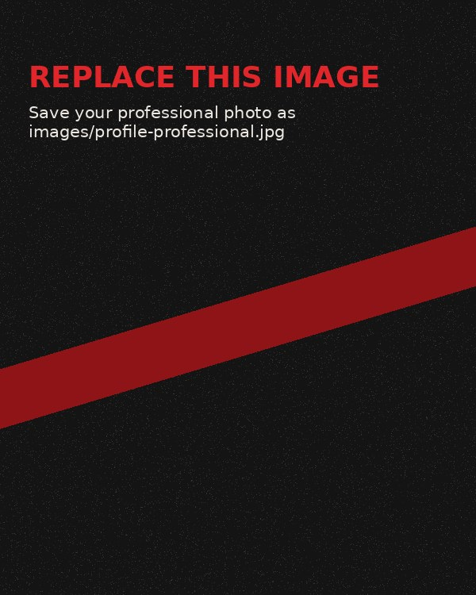
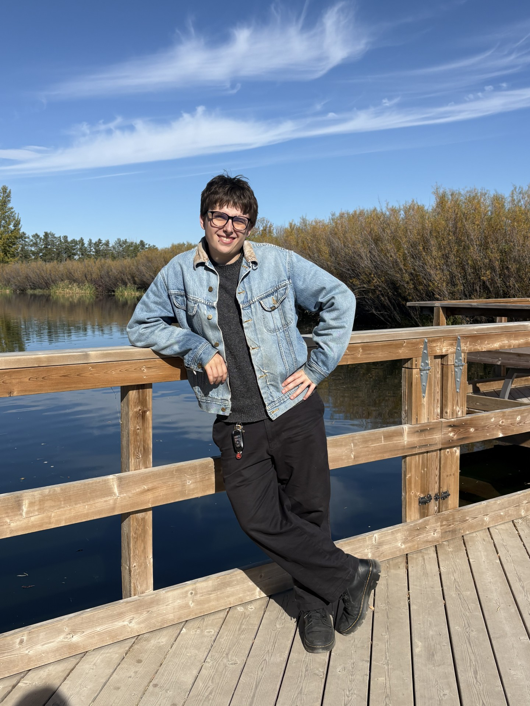

Portfolio 2026
Matthew Livingstone
Computer Systems Technology (CST) student at Saskatchewan Polytechnic, working on my project portfolio, and looking for work experience in technological fields

About Me
I am currently a student in CST, but have always been interested in IT, communications media and general computer systems since highschool freshman year. After working to solve assignments in Python during my senior year I knew I wanted to pursue computer systems in some capacity.
In the CST program, we have studied programming languages such as Java, C#, JavaScript, HTML, and CSS. However, I also plan to continue developing my skills and learning additional technologies independently. Along with programming we have worked on databases, web development, app development, UI design and more. This program has provided me with a strong foundation of technical skills that I can apply in the workplace. I am hardworking, perseverant, work well with others and love to collaborate with others.
Career Goals
In a few years, I would like to be living with my partner in a place of our own, ideally in a job in the tech industry possibly as a technical writer, web developer or a career with some form of artistic expression. I would also like to be more fluent and further my competence in my coding expertise.
What Makes Me Different
I work well in team-oriented environments, I excel at writing and revising documentation, I have experience and skills in customer relations and I am perserverant and always ready to continue learning.
Outside the Screen
In my free time I love to discover new music and games, spend time with my family as well as my partner. For work I am currently employed as a cashier and merchandiser at Shoppers Drug Mart.

Find Me Online
Contact page · GitHub ·